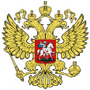

|
 Генерал запаса Владимир Дудник, военный эксперт Ассоциации "Гражданский мир”, кандидат педагогических наук, доцент. Сумерки Российской армии (Вооруженные силы России вчера и сегодня) Ваша оценка Российской армии зависит от того, на какие источники и авторов вы, уважаемый читатель, предпочтете опереться. 1. Информационные службы Министерства Обороны, скорее всего, откажут вам в специальной информации и предложат руководствоваться официальными документами и армейской печатью. Откуда вы получите данные, легко сводимые в формулу: Вооруженные Силы управляемы, боеготовны и способны выполнить поставленные задачи. Военная реформа проходит по плану, но есть отдельные недостатки... 2. У национал-коммуно-патриотов (от Геннадия Зюганова до Александра Руцкого) вы получите оценку прямо противоположную. В имеющихся недостатках, которые приведут или к развалу армии, или ее выступлению против существующей власти, виноваты демократы, ФБР и “оккупационное правительство”. К этому обычно добавляется угроза найти “адекватные ответные меры” в случае расширения НАТО на восток. 3. Более субъективную (с расхождением в причинно-следственных связях) картину вы получите от сановных генералов, до недавнего времени бывших у руководства вооруженными силами, а ныне - не у дел, или в политике (от Бориса Громова до Льва Рохлина). Особую, эклектичную, а потому кажущуюся оригинальной, позицию занимает генерал Александр Лебедь. 4. Единственный источник объективной, жесткой, но конструктивной информации - либеральная пресса (от “Московских новостей” до “Общей газеты”) и независимые эксперты (от генерала Махмуда Гареева до журналиста Александра Жилина). В настоящей статье представлены обобщенные взгляды этой четвертой группы экспертов на основе материалов “круглого стола”, проведенного Ассоциацией “Гражданский мир” в феврале 1997 года. Безусловно, многие специфические проблемы положения армии в обществе, ее роли в политической системе и ее реформирования требуют дальнейшего изучения. Однако, как подчеркивает председатель Ассоциации профессор Т. Таиров, “эти вопросы слишком остро затрагивают повседневные интересы граждан, чтобы оставлять это на усмотрение узких специалистов”. Глава 1. Обобщенный портрет. Российская армия сохранила все родовые признаки и параметры Советской армии, кроме названия, формы одежды и боеспособности. За последние годы обороноспособность России резко снизилась. Вооруженные силы остаются чрезмерно громоздкими, обременительными для экономики и вместе с тем неспособными обеспечить успешное выполнение стоящих перед ними задач. На глазах рушится оборонная промышленность, до сих пор нет продуманной программы ее конверсии. В итоге быстрыми темпами нарастает отставание российской армии в военно-техническом отношении от армий передовых стран, особенно в новых видах оружия и средствах управления. В Армии и Военно-Морском Флоте, по существу, свернута боевая подготовка. Личный состав деморализован, воинская дисциплина находится на катастрофически низком уровне. В ряде военных структур процветает коррупция. Военнослужащие терпят небывалые социально-бытовые лишения, месяцами не получают денежного довольствия, многие офицеры и прапорщики не имеют жилья. Средства, отпускаемые по военному бюджету, расходуются нерационально. Непоследовательность и шатания во внешней политике, нереальные по срокам международные соглашения о сокращении вооружений и некоторые явно надуманные мероприятия, осуществляемые явно в угоду иностранным государствам и в чуждых России традициях, вызывают неоправданные дополнительные расходы, подрывают национальные устои военной службы. До сих пор нет официальной концепции военной реформы, охватывающей все компоненты оборонных структур. Не определены идейные основы военного строительства, отсутствует четкое представление, что именно надо быть готовым защищать и во имя чего должно служить российское воинство. Организационная структура, оперативно-стратегическая направленность подготовки вооруженных сил, система управления, воинского обучения и воспитания устарели и не отвечают современным условиям. В этих условиях о демократизации армейского уклада и гармонизации межличностных отношений не идет даже речь. Неограниченная власть командиров, зачастую переходящая в самодурство, описанная солдатским творчеством еще в эпоху “зрелого” социализма в следующих формах: - всегда прав тот, у кого больше прав. И еще: - на столе командира лежит инструкция о его правах и обязанностях. Пункт первый: командир всегда прав. Пункт второй: если он не прав, смотри пункт первый. Все это отлично уживается со всеобщей расхлябанностью и непотребным внешним видом нижних чинов. Не проходит месяца, чтобы пресса не сообщала об очередном дезертире с оружием и расстрелянных им командирах и сослуживцах. На самом деле дезертиров с оружием в два - три раза больше. Просто в прессу они попадают только после стрельбы. В иных случаях их тихо отлавливают, а не удается - исключают из списков. Нынешнюю армию от быстрого и полного распада удерживают корпоративные интересы и общественная нестабильность, как реальный фактор внутренних угроз, - утверждает ведущий научный сотрудник ИМЭМО Ида Куклина. Глава 2. Кому она служит? Нынче в военной сфере России, унаследовавшей от СССР сверхмощный военный потенциал и милитаризованное сознание, сложилась уникальная ситуация. В связи с тем, утверждает доктор политических наук Ида Куклина, что в России процесс становления государственности не завершен, общество не сформировалось, его политическая структура фрагментарна и расколота, права человека и гражданина не принимаются в расчет, субъектом и объектом обеспечения безопасности стал лишь режим государственной власти. Это значит, что конституционный долг гражданина Российской Федерации трансформировался в обязанность защищать “нынешний режим” в лице правительства и Президента. У этого явления есть как минимум несколько следствий, которые как будто не связаны друг с другом и являют миру свое лицо в самом, внешне, разноплановом виде. Следствие первое: интересы национальной безопасности отступили на второй план перед интересами обеспечения устойчивости власти, достигаемой нередко военными средствами, а внешние угрозы, соответственно, отступили на второй план перед внутренними. (Октябрь 1993 года; Основы военной доктрины, принятые 6 ноября того же года, и обращенные более внутрь страны; чеченская бойня и т. п.). Следствие второе: объективно необходимые меры деполитизации и департизации армии обернулись ее полной деидеологизацией и значительным ущербом для духовных основ служения. В условиях разгрома системы политического воспитания и руководства армии, не сопровождавшегося ее реформированием на демократической основе и созданием системы гражданского контроля, единственным средством сохранения контроля над ней стало использование вертикали единоначалия. Это получило отражение в военном законодательстве и армейских уставах. Следствие третье: командирская вертикаль, используя фактор личной преданности, плотно встроилась в существующий “порядок”, причем - в самом его мракобесном проявлении; власть активно прикармливает и поддерживает наиболее преданных ей командиров, расширяя отрыв начальников от подчиненных, старших от младших. Этому служит и отсутствие правового определения преступного приказа и отсутствие системы и механизмов социально-правовой защиты военнослужащих. В итоге на средних и особенно нижних этажах армейской пирамиды нарушения прав военнослужащих достигли таких масштабов и ужасающих форм, что превратились в важнейший фактор деморализации армии и ее деградации. Глава 3. Численность. Структура. Состав. Сегодня официально объявленая штатная численность ВС РФ - 1,7 миллиона человек (1,2 % населения). Однако расчеты многих специалистов (Александра Лебедя, Николая Юшенкова, Льва Рохлина) дают цифры до 2,5 миллиона человек. Истинную численность вооруженных сил России никто не знает, ибо кроме собственно Армии существуют мало ей по численности уступающие Внутренние Войска (ВВ) и Пограничные Войска (ПВ). Кроме того, по разным источникам от 17 до 20 министерств и ведомств имеют свои воинские формирования. По принятой до недавнего времени официальной терминологии “другие войска”, а точнее - просто параллельные армии. Надо еще учесть военный суд и прокуратуру с дисциплинарными батальонами, таможенную службу, налоговую и другие специальные виды полиции, войска Министерства по чрезвычайным ситуациям (МЧС) и гражданской обороны (ГО). Всего, утверждает профессор Академии военных наук Вадим Макаревский, сейчас более 2 миллионов военнослужащих находятся вне Вооруженных Сил. Собственно Вооруженные Силы (Армия) состоят из пяти видов вооруженных сил (сухопутные, ракетные войска стратегического назначения, войска ПВО, ВВС и ВМФ). Кроме того автономно существуют специальные войска и рода войск (инженерные, химические, медико-санитарные войска и учреждения, военно-космические силы и др.), и ряд Главных управлений с подчиненными им частями и учреждениями. Все это приводит к автономизации и обособлению отдельных звеньев армии и их систем управления, параллельности боевых структур и задач, многообразию образцов идентичных систем техники и вооружения и их нестыковке. Например, кроме РВСН свои стратегические ракетные силы имеют ВМФ и ВВС, штурмовая и вертолетная авиация есть и в ВВС, и в Сухопутных войсках. В России существуют две никак не связанные между собой системы противовоздушной обороны. Каждая, кроме самих ракет, со своими гигантскими бункерами, ангарами и шахтами, своим командованием, своими училищами и военными академия, и, разумеется, - бюджетом. Но ракеты одной системы никак не подходят к другой. Надо ли тогда удивляться, стоя в Центральном музее Вооруженных сил перед обломками самолета Пауэрса, что тут же помещен портрет советского летчика, по ошибке сбитого прежде Пауэрса советской ракетой. Пауэрс остался жив. Видимо, он был более искушенным пилотом, а системы жизнеобеспечения на американском “Локхид У-2” была (и остается везде и поныне) лучше и надежней советской. Вообще относительная дешевизна (по сравнению американскими и евроаналогами) сложных систем вооружения (танков, самолетов и вертолетов, бронетранспортеров и мобильных ракетных комплексов) достигается за счет условий обитаемости и систем жизнеобеспечения личного состава. Это касается и полевого “быта”: советский - российский солдат в поле предоставлен на милость матушке природе. Особое место в ВС занимают Воздушно-десантные войска. Сегодня это пять дивизий, три отдельные бригады, одна мотострелковая бригада, учебный комплекс и части боевого обеспечения. Вокруг их судьбы развернулась ожесточенная борьба: какую структуру и численность иметь, кому подчиняться, где и как дислоцировать. Схватка вокруг ВДВ имеет несколько причин. Это самые боеспособные, мобильные и престижные войска России. С конца 80-х - начала 90-х годов они все более стали приобретать жандармские функции и выступать главной опорой режима. Такие многочисленные ВДВ не по силам России. Напомним: США и Франция имеют по две воздушно-десантных дивизии, а Великобритания и Италия - лишь по одной. На содержание Армии в федеральном бюджете на 1997 год предусмотрено 104,3 триллиона рублей. Но эти ассигнования обеспечивают лишь расходы Минобороны и Минатома. Однако, как указывает Ефим Любошиц из Института экономики переходного периода, бюджетные деньги, кроме параллельных армий и других войск, расходуют еще 24 федеральных органа на обеспечение мобилизационной готовности промышленности и гражданскую оборону, а также еще 5 федеральных органов на утилизацию и ликвидацию вооружений. Поэтому суммарные военные расходы в текущем году ожидаются не менее 135,8 триллионов рублей (26 % федерального бюджета, или 5 % ожидаемого ВВП - валового внутреннего продукта). По оценкам Лондонского Института стратегических исследований (ЛИСИ), военные расходы России в 1997 году могут составить даже 200 триллионов рублей. Для сравнения: в 1996 году военные расходы в долях ВВП составили: в США - 3,8 %, в Турции - 3,5 %, в странах НАТО - 3,1 %, в Китае - 1,4 %, в Японии - 1,1 %. Таким образом, необходимость военной реформы, кроме специальных, определяется и чисто экономическими факторами: военная организация должна быть по средствам государству. Глава 4. Перспективы. Основное содержание военной реформы - приведение структуры, организации, численности, боеготовности и боеспособности Армии в соответствие с экономическими возможностями и военно-стратегическими вероятностями. Существует несколько подходов к этой проблеме. Их объединяет стремление к удешевлению, уменьшению численности, упрощению структуры армии и приведению ее возможностей в соответствие с геостратегическими реалиями и внутренними ресурсами общества. Концепция МО и ГШ была отвергнута Президентом в мае 1997 года. Но с заменой Родионова на Сергеева, а Батурина на Кокошина - военная реформа вроде бы пошла. Альтернативные же концепции, в разработке которых, кроме Академии военных наук (генерал армии Махмуд Гареев), высших учебных заведений и научно-исследовательских центров страны активное участие принимали общественные организации (в том числе - Ассоциация “Гражданский мир”) - официально не рассматривались, и, таким образом, открытого признания не получили. Это дело ближайшего будущего, как заявил Президент на Совете Обороны 22 мая. Однако, судя по всему, этого будущего уже не будет. Наиболее приемлемой представляется интегрированная точка зрения Академии военных наук и “Гражданского мира”. В этом случае предполагается вместо 8 военных округов создать 6 территориальных командований, с которыми географически должны быть совмещены рамки округов внутренних и пограничных войск. Осуществляется переход к трехвидовой структуре Вооруженных Сил в соответствии с тремя сферами их применения: на суше, в воздухе и на море. Соответственно числу территориальных командований, ВВС и ПВО должны иметь по шесть оперативных объединений. Военно-морские силы должны иметь два флота (северный и тихоокеанский) и три командования ВМС - в Балтийском, Черном и Каспийском морях (сейчас - четыре флота и флотилия). Сухопутные войска перейдут на бригадно-корпусную организацию вместо теперешней армейской. В повестке дня - преобразование МО в гражданскую структуру с военно-политическими и политико-административными функциями с одновременным созданием вместо Генштаба новой структуры новой структуры типа американского Комитета Начальников Штабов с функциями оперативного руководства и управления всеми вооруженными формированиями страны. Серьезные разногласия вызывают темпы военной реформы и конечная численность Армии. Правительство предполагает завершить военную реформу к 2010 году. Мы полагаем, что такая растяжка чревата многими опасностями и срывом самой Реформы. Она должна и может быть завершена за семь лет. Намеченная властями численность Армии в 1,2 - 1,5 миллиона человек нереальна. Это приведет к уже знакомому нам недофинансированию отдельных воинских блоков и программ. В результате может усилиться социально-политическая нестабильность военной организации и начаться ее материально-техническое разрушение ввиду физического и морального устаревания техники, систем управления и т. п. Если военные расходы будут поддержаны на уровне не более 4 % от теперешнего ВВП (самые высокие в мире!), то при содержании и оснащении ВС России по европейским стандартам их численность может составить не более 500 - 550 тысяч человек. Но это должны быть высокоподготовленные профессиональные войска. Это достижимо лишь при приеме (призыве) на военную службу с 20 - 21 года, а не в 18 лет, как теперь. Глава 5. Военная реформа. (Так это было). Впервые тема военной реформы ворвалась в открытую прессу в 1988 году. Честь этого прорыва принадлежит молодому ученому Военно-политической академии (ныне разгромленной) подполковнику Александру Савинкину и начальнику штаба армии из Гродно генералу Александру Владимирову. Затем прошла лавина различных общественных форумов, подтвердивших необходимость и неизбежность военной реформы и предложивших веер реформаторских концепций и идей. Хорошо помню, как на один из таких форумов в Москве в январе 1990 года с Камчатки на деньги, собранные офицерами части, приехал капитан-артиллерист. Все его выступление состояло из двух фраз: - Меня к вам послали офицеры. Они велели сказать: если не проведем военную реформу немедленно, реформировать будет некого - армия развалится. Тогдашний министр обороны генерал армии Дмитрий Язов запретил произносить даже самое слово “реформа”. Практически все военнослужащие, принимавшие участие в диспутах, конференциях, экспертизах и круглых столах по военной реформе были им из армии изгнаны. Эту традицию продолжил и генерал Павел Грачев, хотя под давлением обстоятельств и конъюнктуры вынужден был заявить, что МО разработало концепцию реформы, ее первые этапы успешно завершены, до финала реформы - рукой подать. - Реформа - это я, - как-то заявил Павел Грачев руководителю Движения “Военные за демократию” в ответ на его сообщение, что Движением предложен целостный взгляд на военную реформу. Реформа имеет место лишь тогда, когда последний рядовой может с гордостью сказать: - Реформу вижу, в ней участвую, реформа - это я. Я же как-то спросил солдата элитарной части: - Сынок, как идет военная реформа? И в ответ услышал: - Ты что, дядя, какая реформа?! Армия - это дурдом. На фоне разговоров о несуществующей реформе продолжается воинственное неприятие правды об Армии. Наглядное доказательство тому - реакция СМИ на заявление преемника Грачева генерала армии Родионова о кризисе в армии. Масс-медиа тут же завялили: дни Родионова сочтены, ищите нового министра. Понадобилось публичное выражение доверия и поддержки со стороны Президента, чтобы публика успокоилась. И успокоилась, а зря. 22 мая в ходе заседания Совета Обороны, на котором должна была обсуждаться концепция военного строительства, Президент снял с должности министра обороны, а заодно - и начальника Генштаба генерала Виктора Самсонова, выдвинутого на эту должность Родионовым. Ельцин не простил Родионову его критической позиции. Просто мастерски держал паузу более трех месяцев. В итоге сладкоречивый секретарь СО Юрий Батурин в союзе с министром внутренних дело генералом Куликовым переиграл неосторожного армейского генерала, продолжив генеральскую чехарду, начатую Александром Лебедем, ставшим также ее жертвой. Вместе с тем, нельзя не приветствовать это решение Президента. Игорь Родионов, неоднократно заявлявший, что “профессиональная армия нужна только новым русским”, а “принятие закона об альтернативной службе означает смерть вооруженным силам”, стал по существу символом противодействия военной реформе. Вместе с тем, полагаю ошибочным надеяться, что Батурин при поддержке даже замов премьера Немцова и Чубайса, введенных в состав Совета Обороны, сможет продвинуть застрявшую военную реформу, если так и не будет создан специальный орган и не будет принят закон о военной реформе. Это ее непременное стартовое условие. История так и не начавшейся военной реформы запутанна и противоречива в силу политико-идеологических пристрастий. - Мы строим вооруженные силы России не на голом месте, - заявил министр Евгений Шапошников в мае 1992 года. - Строительство армии мы начинаем с нуля, - отпарировал в июле того же года сменивший его на этом посту генерал Грачев. - Предстоящую военную реформу будем проводить по-новому, - пообещал его преемник Игорь Родионов в октябре 1996 года. Итог подвел Президент в мае 1997 года: - Реформы нет и не видно. Но что бы не говорили спекулирующие на этой теме политики и начальники, реально не желающие никаких реформ, цельная ее концепция в стране все же есть. И выработана она общественными организациями и независимыми военными экспертами. Главная цель военной реформы - создание новой армии, соответствующей объективным возможностям страны и реальным угрозам, способная при минимальных затратах обеспечить защиту страны и ее коренных интересов, срыв и отражение возможной агрессии по всем азимутам. Авторы этих концепций исходят из понимания, что применение военной силы с целью военного разгрома противника - малопродуктивно и, следовательно, маловероятно. Теперь предпочтительнее использовать военную силу для опосредованного воздействия: военно-политического давления, угрозы силой, демонстрации силы и т. п. Достижение такого состояния оборонной сферы невозможно без реформы государственного управления, финансирования, оптимизации структуры, организации, состава и численности ВС, перехода на новые научно-технические принципы и способы достижения военной победы в бою, сражении и войне. Движения по этому пути у нас пока нет: у стагнирующего общества с падающей экономикой не может быть развивающейся армии. Однако глубоко ошибаются те, кто полагает, что российскую армию (несмотря на ее последовательные неудачи в Афганистане и Чечне) легко победить в полномасштабном конфликте. Она не способна (пока?!) адекватно реагировать на локальные и региональные конфликты малой и средней интенсивности (последние Уставы и Наставления о таковых даже не упоминают). Однако в случае “большой войны” будут включены Властью и самим Народом те механизмы и силы (так называемые постоянно действующие факторы”), которые приводили его к победе в двух Отечественных войнах. Не исключено, что в случае прихода к власти коммуно-патриотов, последние будут искать (и создавать!) поводы для военных конфликтов. Не исключаю подобные сценарии и со стороны ныне действующей власти в целях локализации народного гнева и недопущения реставрации большевизма (такие сценарии в истории России уже были). Во всяком случае, “малая конфронтация” с НАТО лежит в русле этой политической логики. Сама же армия автоматически поддержит оба эти сценария. Глава 6. Последствия всеобщего призыва. 16 мая 1996 года увидел свет указ Президента № 722 о переходе к профессиональной армии. До этого Ельцин как минимум четырежды говорил о необходимости военной реформы, не раскрывая ее сущность. Значимость данного указа двусторонняя. С одной стороны - он впервые официально, хотя и косвенно, признает необходимость самой военной реформы. С другой - указывает на ее существенный компонент и существенный результат: на профессиональную армию. Однако дело не только и не столько в приверженности Бориса Николаевича идее профессиональной армии. Проблема, заставившая Президента Ельцина принять решение о переходе к 2000 году к профессиональной армии - невозможность укомплектовать сегодня армию на основе всеобщей воинской обязанности. По официальным данным МО за пять лет (с 1992 года) количество “уклонистов” выросло в пять раз и превысило 31 тысячу (четыре общевойсковых дивизии!). По данным независимых экспертов эта цифра значительно выше. Уклонение от службы выступает в трех основных видах. 1. Отказ от призыва по различным причинам, в основном - нравственно-религиозного плана. Это право закреплено в Конституции, но законодательно не разработано. 8 декабря 1995 года Государственная Дума проголосовала против Закона об альтернативной воинской службе. Тем самым законодательный орган Республики нарушил статью 59 Конституции, одновременно продемонстрировав приверженность сталинскому закону “О всеобщей воинской повинности” от 1 сентября 1939 года, упразднившему ранее существовавшее в России еще с 1874 года право на отказ от военной службы по убеждениям совести. На этом о������новании органы, ведающие призывом, отказывают в реализации этого конституционного права. Примерно два года назад набирающая опыт и общественный вес Антимилитаристская Радикальная Ассоциация (АРА) начала кампанию судебных исков по защите “отказников” по нравственно-религиозным причинам. Все иски она выиграла. Но сколько сегодня отказников по этой мотивации, никто сказать не может. Думаю, пока их немного. По данным Международной Амнистии, ссылающейся на российский Институт религии и права, в 1993 году их было около 700. 2. Главная форма отказа от призыва - чистое уклонение (таких большинство) и “отмазка” путем дачи взятки. Бывает, но редко, дача взятки должностным лицам военкомата. Как показало исследование социолога Ольги Некрасовой, взятки идут через медицинскую комиссию. Находят одного “диспетчера” среди членов призывной комиссии и от него получают указания, что делать. Однако далеко не у каждого есть необходимая сумма для отмазки, а механизм контроля за призывом реально отсутствует. Поэтому в последние два - три года стали массово попадать в армию действительно физически несостоятельные лица. В этом году, по официальным данным, уже в частях среди них выявлено более 200 дистрофиков. 3. Но самая распространенная форма отказа от службы - дезертирство и самовольное оставление части (юридически это не одно и то же). “Крышей” для них чаще всего служит Комитет солдатских матерей со специальным сборным пунктом в Хамовнических казармах в Москве. И хотя они, безусловно, спасли жизни не одной сотни молодых солдат (“салаг”), подвергшихся глумлению и издевательствам со стороны “дедов”, и отмечены за свою самоотверженную работу по социально-правовой защите солдат и сержантов специальной Нобелевской премии, юридически их практика не безупречна. Никакой комитет или союз, помимо суда, не может вынести вердикт о правомерности поступка солдата, оставившего службу. Без судебного рассмотрения произвольно решается (чаще - укрывается) степень вины командиров и начальников, которые зачастую сами насаждают “дедовщину”. В 1989 - 93 годах на этом же поле активно действовал, распространяя свое влияние на офицеров, прапорщиков и их семьи, Союз социальной защиты военнослужащих “Щит”. После ряда распадов и внутренних неурядиц он проявляется теперь лишь в сфере благотворительности, адресованной в основном пограничникам в ближнем зарубежье. Примерно такая же судьба постигла военный профсоюз. В России нет законодательства по проблемам социально-правовой защиты военнослужащих, специальных органов и механизмов для ее осуществления. Это функция командира, хотя понятие “личные права и свободы” в Уставе отсутствует, как и термин “социально-правовая защита”. Она вменяется также органам по работе с личным составом, однако никаких прав на этот счет им не предоставлено. Солдаты прозвали их “органами по борьбе с личным составом”. В масштабе государства существует Межведомственная комиссия по социальным вопросам военнослужащих и членов их семей, однако без четких обязанностей и с рекомендательными правами. По этим причинам солдат защищает себя сам путем отказа и уклонения от воинской службы. Самый большой процент отказников и уклоняющихся дают Москва и Санкт-Петербург. Провинция пока идет служить безропотно. В провинции плохо. Там нет работы, а если есть - то нет зарплат. Отслужив в армии, молодой человек попадает на рынок рабочей силы, который был ему раньше недоступен: охрана, милиция, городской транспорт. А военное училище - реальный шанс получить высшее образование для материально несостоятельных семей. То есть, армия дает молодому человеку возможность найти себя в обществе, а для способных и служит социальным лифтом. Но лифт ходит не только вверх. Одних армия поднимает до своего уровня, других же опускает до своего уровня - смотря где на социальной пирамиде человек стоял до призыва. Ввиду названных, а также других (возможно, более глубоких, но скрытых в недрах общества) причин, катастрофически снизилось качество призывного контингента. Каждый третий призывник-97 не получил среднего образования, каждый пятый успел пристраститься к спиртному, каждый десятый был не в ладах с законом, каждый третий имеет дефект здоровья, до 15 % имеют дефицит массы тела, а попросту - дистрофики. Большинство не успевает за установленный законом срок службы глубоко овладеть военной профессией. Не случайно в Госдуме периодически поднимается вопрос о продлении срока службы. Казалось бы, все это - козыри за военную реформу, главным итогом которой должна стать армия, состоящая из высокопрофессиональных бойцов. Однако до объявленого Президентом срока осталось всего три года, но в этом направлении не сделано и шага. Высоко “сопротивление материала”. Противники военной реформы утрвеждают, что профессиональная армия выгодна только новороссам - своих детей они избавят от службы, а чужие пусть гибнут в локальных войнах. Но для состоятельных людей вопрос с собственными детьми как раз лишен. Сына-призывника они отправят учиться за границу. Или в России устроят в юридический или языковой ВУЗ - профессия престижная и есть военная кафедра. В крайнем случае сын пойдет служить офицером. Не решен этот вопрос как раз у среднего класса, который и должен был бы лоббировать “армию профи”. Однако на него как раз опирается анти-лобби профессиональной армии. Система рассуждений сугубо “патриотична”, а потому - плоска: как же так, одни будут гулять на гражданке, а другие за них служить? “Забывают”, что служит, а также пишет книги, стрижет овец и учит детей каждый сам за себя, а не “за того парня”. Речь о нормальном разделении труда: если есть профессиональные компьютерщики и сантехники, почему не быть профессиональным солдатам? Нужны резервисты? Найдутся и они, если платить за обучение, как в тех же США. Нравственный вопрос: одни в случае чего воюют, а другие - в тылу? Но даже во время последней Отечественной войны большинство граждан оставалось в тылу. И погибло мирного населения примерно вдвое больше, чем в действующей армии. Находящиеся за сценой истинные режиссеры “тихого сопротивления” военной реформе уже подменили понятие “профессиональный солдат” таким теперь чисто русским, но уходящим корнями к ландскнехтам средневековья, явлением, как “контрактники”. По некоторым данным, солдат и сержантов, приходящих служить по контракту, уже около 200 тысяч человек. Реально “контрактников” значительно больше, так как уже почти пять лет контракты подписывают и офицеры. Именно подписывают в одностороннем порядке, а не заключают, как это было бы на цивилизованном рынке труда. Получая около 300 тысяч рублей, солдат-контрактник в объеме такой платы и подготовлен. Но нередко на другой день после получения денег, обмундирования и вооружения он исчезает из казармы в кампании с “калашниковым”. Глава 7. Проблема зарплат. Левооппозиционные силы, партии и движения любят сравнивать уровень зарплат российских военнослужащих с западными стандартами. На мой взгляд, подобные шаги носят более спекулятивный характер. Анализ, проведенный мной, указывает: воин в России всегда значительно отставал в размере материального вознаграждения от своих западных коллег. Это касается всех категорий военнослужащих. Причем, по мере приближения к нашему времени, этот разрыв все более возрастает. Исторически сложилось так, что не отказываясь “от злата”, российский воин больше руководствовался соображениями долга, чести и развитым чувством Патриотизма. И сегодня эти факторы не исчерпали себя. В июле 1996 года “Горбачев-фонд” провел очередной круглый стол по проблемам безопасности России. Среди прочих было рассмотрено соотношение материальных духовных стимулов службы. Участники пришли к выводу, что, как и ранее, ведущую роль в военной службе сохранили за собой нравственные компоненты. Для их развития и обновления есть достаточная база. А именно: Конституция, военная история, свод военных законов, боевые традиции, развитое чувство патриотизма. Наконец, возврат к Вере. В условиях экономического спада и финансового кризиса их солидным материальным подкреплением, кроме скудных пока зарплат, могли бы стать: традиционное для России наделение землей, беспроцентные субсидии и льготные кредиты, государственные ценные бу��аг��. Эти же мысли были поддержаны независимыми экспертами Ассоциации “Гражданский мир” на дискуссии в феврале сего года. Безусловно, денежное содержание было и всегда останется главным источником благополучия служивого люда. Россия, как и любая другая страна, всегда оплачивала ратную службу по высшей мерке. Например, во времена Петра I командир дивизии (в пересчете на покупательную способность рубля 1996 года) имел оклад 180 миллионов рублей. Это полевая пехота мирного времени. В артиллерии, у инженеров и в кирасирских полках оклады были в два раза, в гвардейской пехоте - в 2,8 раза, а в гвардейских конных полках - в 3 раза выше. На театре военных действий и за границей жалование увеличивалось в полтора раза. Кроме того, выдавались порционы, рационы и денщицкие деньги, а также квартирные деньги, пособия на пропитание детей и пособия на их обучение. К примеру, прапорщику полагалось в месяц 123 килограмма хлеба, 61,5 килограмм мяса, 37,5 литров вина, 492 литра пива или их денежный эквивалент. Генералу - также, но в десятикратном размере. Кроме того, увечные офицеры содержались в специальных пансионах на государственном коште “с мундиром”, а жены их погибших собратьев - во вдовьих домах. В начале XX века командиру роты (вне зависимости от его семейного положения) полагалась квартира из двух комнат, не менее 30,5 квадратных метра каждая; старшим офицерам - из трех, а полковнику - из пяти комнат, не считая помещений для прислуги и кухни. Снижение абсолютной величины денежного довольствия, по мере приближения к новейшему времени, не сопровождалось его относительным уменьшением: подпоручик (лейтенант) получал в начале нынешнего века жалование в три раза выше зарплаты рабочего. Ныне в армии России более 200 тысяч офицеров и прапорщиков не имеют казенного жилья, а тем паче - средств на покупку его в собственность. Денежное содержание командира дивизии, по официальным данным, составляет 1,8 миллиона рублей, солдат срочной службы получает 35 - 40 тысяч рублей (в зависимости от рода войск и специальности), курсант военного училища, подписавший контракт - около 350 тысяч. Раньше к этому добавлялось казенное курево (для некурящих - его замена сахаром). Теперь этого нет. Названные цифры денежного содержания включают лишь оклады по воинскому званию и должности и надбавку за выслугу лет. Реальный оклад, который, как и по всей стране, выплачивается несвоевременно, значительно выше. Например, у командира дивизии он приближается к 2,5 миллионам рублей. По этой же причине командир полка - полковник, имея оклад в 800 тысяч рублей, получает денежное содержание более 1,5 миллионов. Командир батальона - на 200, а роты - на 400 тысяч меньше. Заметим: зарплата командира полка практически равна заработку водителей троллейбуса и автобуса и не идет в сравнение с зарплатами рядовых работников многочисленных охранных служб, агентств и ведомств, составленных из бывших военных. Бывший министр обороны генерал Павел Грачев, дабы не тратиться на пенсии для отставников, завел практику, не увеличивая оклады по званию и должности (из которых и начисляется основная сумма пенсии), увеличивать реальное денежное содержание офицеров кадра за счет различных доплат и надбавок, не учитываемых при начислении пенсии. В результате самой нищей категорией генералов и офицеров России оказались те, кто уже отдал армии все. По закону, максимум пенсии - 85 % денежного содержания. Реально (и это рассчитано учеными-энтузиастами на компьютере в 1995 году) максимальная пенсия едва дотягивает до 55 %. Например я, прослужив в армии более 40 календарных лет и завершив службу на должности с окладом командира корпуса, получаю пенсию 1,32 миллиона рублей. Это чистый (без надбавок) оклад командира батальона - молодого подполковника. Реально у министра обороны необходимых денег нет: бюджетные ассигнования с 1993 по 1995 годы снизились почти вдвое, в том числе на денежное довольствие личного состава - на 22 %. Наш собственный политический опыт (1964, 1991 и 1993 годы) свидетельствует о том, что в подобной ситуации армия может легко поддержать смену политического руководства страны. Существует закон: армия поддерживает лишь сильного, а также того, кто готов улучшить ее материальное положение и восстановить утраченный статус - престиж службы. Но существует, как считает директор Института США и Канады Сергей Рогов, и обратная зависимость: без радикальных изменений в военной сфере экономическая и политическая реформы в стране обречены на провал. Глава 8. В армии воруют. Я думаю, кроме генетически присущей россиянам вороватости, ее армейские корни в неуверенности в завтрашнем дне. А точнее - в дне после службы. Его все страшатся. Поэтому для многих на службе первейшая забота - создать задел на будущее. Наличие коррупции в стране признал, наконец-то, Президент. В стране и армии она была всегда. Однако ныне приняла бесстыдные и опасные размеры и формы. Было бы бессмысленной попыткой называть имена. Их нет, хотя армия разворована, а военные трибуналы молчат. Уличенные в воровстве сановные генералы из армии увольняются тихо, с полным пансионом и пенсионом и наворованным добром. Не знаю, чем кончится возникшая в мае возня вокруг генерала армии К. И. Кобеца, который успешно провалил все, дававшиеся ему ранее Президентом и последним Верховым Советом, поручения, но зато получил высшее звание и хлебную, никому не подконтрольную должность Главного инспектора армии. Мне же вспоминается возня вокруг другого высшего военного вельможи - Федора Бурлакова. В октябре 1991 года он командовал убегавшей из Восточной Германии самой богатой группой войск. В прессе появились материалы, что эту группу не столько расформировывают, сколько разворовывают. У меня на этот счет состоялся разговор с тогдашним (и последним) министром обороны СССР Евгением Шапошниковым. В ответ на его утверждение, что посланные к Бурлакову многочисленные проверки фактов воровства не подтвердили, я ответил: “надо знать, кого посылать и куда конкретно”, и назвал фамилию генерала, который, если его послать в Германию с подобранными им лично людьми, через неделю привезет и факты, и документы. Ответа не последовало. Разговор на этом был закончен. Растаскивание техники, вооружения и имущества продолжилось. Не менее богатым был Закавказский военный округ. Параллельно с началом суверенизации республик там вспыхнули первые вооруженные конфликты. Разумеется, стреляло оружие Советской армии. Как оно попало в руки экстремистов? Ответа не дано и по сей день. Однако он есть. Ключ в том, что командующий округом с началом его развала срочно “заболел” и завершал развал округа его первый заместитель, принадлежавший к одному из местных кланов. Недавно в “Общей газете” появилось признание бывшего комдива этого округа (ныне, в расцвете сил, - уволенного) о получаемых им в ту пору, как правило - устных, распоряжениях на раздачу оружия и “направо”, и “налево”. Кстати, ни один из командующих многочисленных некогда военных округов, отошедших к республикам СНГ или перереформированных, не отчитался передо государством за те несметные богатства, которыми он распоряжался. Самое простое решение сокрытия хищений - сжечь то, что от расхищенного осталось. У нас, начиная с 1989 года, склады горели во всех внутренних округах и на всех флотах. Кстати, ни один склад в бывших группах войск не сгорел. А зачем? Проверить вывезенное и выведенное, оставленное и исчезнувшее все равно уже никто не сможет: войска ушли, дела в архиве, на месте хозяйничают суверенные хозяева. В условиях казнокрадства и коррупции на так называемое казарменное воровство никто уже не обращает внимания. В нынешней армии фактически законом и властью не защищена не только личность военнослужащего, но также неприкосновенность государственной, общественной и личной собственности. Сейчас под следствием находятся около 40 старших и высших генералов. Однако в казну это не вернуло ни денег, ни собственности. Глава 9. Российские реформы и Запад. Предполагаемая военная реформа в России относится к категории исторически запоздавших. Поэтому это - модернизация зависимая. Состояние зависимой модернизации привело к парадоксальным явлениям в нашей военно�� и вн��ш��ей политике. 1. Несмотря на то, что Россия имеет богатое военное прошлое и мощный военно-интеллектуальный потенциал, мы в поисках образцов военной реформы постоянно обращаем взор на Запад. Да и немалые деньги там заимствуем. Не исключено, что и эту, как и Петровскую, реформу мы сумеем провести лишь с опорой на Запад. Запад должен быть к этому готов и проявлять больше встречной инициативы в форме материально выгодного вовлечения России в различные военные проекты. 2. Однако сейчас в России имеет место вспышка “конструктивного негативизма”, выливающаяся в новую волну поиска врага на Западе. Майский парижский саммит по проблемам НАТО эту волну не собьет. Запад и НАТО могли бы сделать более активное и смелое продвижение навстречу интересам России. Автор стратегии холодной войны Джордж Кеннон предупреждал: расширение НАТО на Восток будет его роковой ошибкой. И оказался прав. Безопасность мира - не в подвижности или неподвижности НАТО, а в том, чтобы Россия нашла свой путь параллельно ему. 3. Нынешнее состояние российской армии чревато взрывом (стихийным или кем-то инспирированным, не имеет значения), направленным против существующей системы и олицетворяющей ее власти. В этом скрыта и угроза Западу. Поэтому он заинтересован в российской военной реформы и устойчивости ее политического режима, что становится все более синонимично. Однако сегодня либеральные силы на Западе должны искать новые формы, методы и стратегию воздействия на процессы в России. Практиковавшееся до сих пор начинает вызывать реакцию отторжения, поддерживаемую коммуно-патриотами. Могли бы быть, например, усилены культурные обмены, связи по линии общественно-политических организаций, обмен кадрами и специалистами и помощь в их подготовке, обмен печатной продукцией. Важно позаботиться, чтобы в этом процессе принимал участие как можно более широкий круг людей. И как можно меньше функционеров. Это потребует от западных стран дополнительных затрат и может встретить недовольство и сопротивление налогоплательщиков. Однако нагрузка на их кошелек в этом варианте будет всегда ниже, чем при возврате к новому изданию идеологической конфронтации и холодной войны. А признаки такого возврата нарастают по мере пробуксовки российских реформ. Август 1997 - февраль 1998 г. |